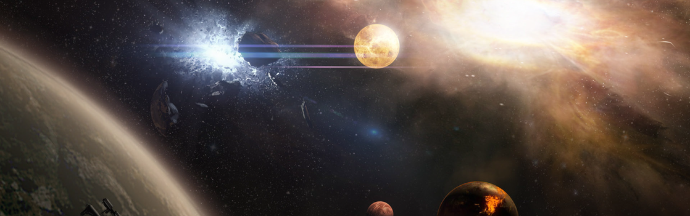

SYSTEM: PYRO

Excurs - System: Pyro
Pyro System ͞"
Yo ho ho, there’s a place I know,
The slam’s all clean and the wenches glow,
Yo ho ho, a-Ruin I’ll go,
Mark my jump off to Pyro.͟
- Traditionelles Lied der einheimischen
Wenn Spider das Gesicht der Piraterie in der Galaxis ist, dann ist Pyro das schlagende Herz. Als sonst desolates, lebloses System, welches durch eine verlängerte Nova-Phase seines Sterns gebeutelt wird, ist Pyro vor allem als die Heimat des Piraten-Außenpostens auf der Ruin-Station bekannt. Wie auch Spider ist Pyro ein Beispiel dafür, dass Piraten eine Lücke füllen und sich sogar ausbreiten, nachdem ein System von seinen zivilisierten Entwicklern verlassen wurde. Anders als Spider jedoch wurde aus Pyros nicht einfach ein geordneter Schwarzmarkt, welcher ein Äquivalent zu normalen Marktplätzen auf Standardwelten darstellt. Hier kämpfen verfeindete Piratengangs um die Vorherrschaft.
Das System wurde angeblich im Jahre 2401 von der Roustabout entdeckt, einem Tankerschiff unter Erd-Flagge, welches sich durch das Taranis System auf der sicheren Routen-Variante im Vergleich zu Kellars Run befand. Der Wachoffizier des Schiffes bemerkte eine Gravitationsanomalie 30.000 Kilometer abseits der Route, ging dem aber nicht weiter nach. Es dauerte noch einmal 44 Jahre, bis die Besitzer des Schiffes nach neuen Bergbauterritorien suchten und dazu Entdecker in diese Region entsandten, welche Pyro und seine Umgebung formell kartierten. Diese Studie bemerkte schnell die allgemeine Unordnung des Planetensystems, die Schwierigkeit, transportable Ressourcen zu finden, und die Unwahrscheinlichkeit, irgendetwas im System erfolgreich zu terraformen.
Pyro ist heute ein allgemein bekannter Name im UEE, da es als Hintergrund für eines der ersten Arena Commander Level von Original-Systems dient. Die eisblaue Nova und die gefrorene Höllenlandschaft von Planeten, die sich langsam auf ihre Zerstörung zubewegen, schienen ein guter Ort zu sein, um zu zeigen, wie interessant 3D-Raumkampf sein kann.
Die Ruin Station ist daher nicht geeignet für Touristen, regulären Handel oder selbst erfahrene Kopfgeldjäger, die den Nervenkitzel des Kampfes suchen. Die Piraten, welche die Station kontrollieren, sind die Besten der Besten und jederzeit bereit, sich gegenseitig für ein größeres „Stück des Kuchens͞ in den Rücken zu fallen. Xeno Threat ist die Crew, die aktuell die Station kontrolliert, jedoch kann sich das jederzeit ändern.
Kampf mit Feuerwaffen ist auf der Ruin Station so allgegenwärtig, dass Ladenbesitzer tatsächlich eine Reihe gepanzerter Türen installiert haben. Wenn interne Machtkämpfe ausbrechen, versiegeln sich lokale Läden und Einrichtungen automatisch selbst. Ein Highlight der schummrig beleuchteten Hallen der Ruin Station ist Corner Four, eine Reihe ehemaliger Forschungslabore, die in Drogenfabriken und medizinische Einrichtungen umgebaut wurden, in denen keine Fragen gestellt werden. Neutrality, die unerlässliche Bar der Station, ist der einzige sichere Ort auf der Station. Gepanzerte Schläger, Cousins genannt, sorgen für Frieden, zumindest so weit, dass das Personal und die Einrichtung selbst einigermaßen sicher sind.

Yo ho ho, there’s a place I know,
The slam’s all clean and the wenches glow,
Yo ho ho, a-Ruin I’ll go,
Mark my jump off to Pyro.͟
- Traditionelles Lied der einheimischen
Wenn Spider das Gesicht der Piraterie in der Galaxis ist, dann ist Pyro das schlagende Herz. Als sonst desolates, lebloses System, welches durch eine verlängerte Nova-Phase seines Sterns gebeutelt wird, ist Pyro vor allem als die Heimat des Piraten-Außenpostens auf der Ruin-Station bekannt. Wie auch Spider ist Pyro ein Beispiel dafür, dass Piraten eine Lücke füllen und sich sogar ausbreiten, nachdem ein System von seinen zivilisierten Entwicklern verlassen wurde. Anders als Spider jedoch wurde aus Pyros nicht einfach ein geordneter Schwarzmarkt, welcher ein Äquivalent zu normalen Marktplätzen auf Standardwelten darstellt. Hier kämpfen verfeindete Piratengangs um die Vorherrschaft.
Hintergrund & Entdeckung
Jegliche Aussichten auf Leben im Pyro System verschwanden vor Millionen Jahren, als der Stern des Systems anfing, sich in eine Nova zu verwandeln. Astrobiologen, welche die Überreste der Planeten im theoretischen grünen Band untersuchten, fanden kaum Hinweise darauf, dass überhaupt höheres Leben möglich gewesen wäre. Außer Algen-ähnlichen Fossilien wurde nichts entdeckt. Das System besteht aus sechs ruinierten Welten, die einen hellen, jedoch sterbenden Stern umkreisen. Wären nicht die Sprungpunkte zu zwei bewohnten Systemen entdeckt worden, die mit Pyro verbunden sind, wäre das System wohl niemals besiedelt worden.Das System wurde angeblich im Jahre 2401 von der Roustabout entdeckt, einem Tankerschiff unter Erd-Flagge, welches sich durch das Taranis System auf der sicheren Routen-Variante im Vergleich zu Kellars Run befand. Der Wachoffizier des Schiffes bemerkte eine Gravitationsanomalie 30.000 Kilometer abseits der Route, ging dem aber nicht weiter nach. Es dauerte noch einmal 44 Jahre, bis die Besitzer des Schiffes nach neuen Bergbauterritorien suchten und dazu Entdecker in diese Region entsandten, welche Pyro und seine Umgebung formell kartierten. Diese Studie bemerkte schnell die allgemeine Unordnung des Planetensystems, die Schwierigkeit, transportable Ressourcen zu finden, und die Unwahrscheinlichkeit, irgendetwas im System erfolgreich zu terraformen.
Pyro ist heute ein allgemein bekannter Name im UEE, da es als Hintergrund für eines der ersten Arena Commander Level von Original-Systems dient. Die eisblaue Nova und die gefrorene Höllenlandschaft von Planeten, die sich langsam auf ihre Zerstörung zubewegen, schienen ein guter Ort zu sein, um zu zeigen, wie interessant 3D-Raumkampf sein kann.
Pyro I
Pyro I ist ein verkohlter, schwarzer Felsen, der sich langsam auflöst. Kaum jemand interessiert sich für den Planeten. Der Raum um Pyro I ist schwer zu navigieren, wenn man nicht gerade Schilde höchster Qualität verbaut hat. Außerdem wurden keinerlei signifikante Mineralienvorkommen auf der Planetenoberfläche entdeckt, aus denen man Gewinne ziehen könnte.Pyro II
Pyro II ist ein kernloser Planet, der mit der Zeit in den Stern fallen wird. Während der ersten Entdeckung des Systems war Pyro II stark im Fokus. Der Planet schien signifikante Ablagerungen von Cadmium, Titan sowie schwerkraft-geschmiedete Edelsteine zu enthalten. Ein kleinerer „MetallRausch͞ sorgte dafür, dass diese Vorkommen durch Handelsschiffe der Menschen schnell erschöpft wurden. Innerhalb von nur fünf Jahren wurde die Welt zu einer in keiner Weise mehr praktikablen, leeren Hülle.Pyro III
Der dritte Planet des Systems ist der einzige, von dem man glaubt, dass er einmal im grünen Band des Systems gelegen haben könnte, bevor der Stern zur Nova wurde. Dort wurden die winzigen Algen-ähnlichen Fossilien entdeckt. Aus diesem Grund lag der initiale Fokus auf Non-ProfitForschungsvorhaben während Pyros erster Erforschung. Was das Leben der Forscher dabei schwer macht ist die Tatsache, dass der Nova-Prozess aus Pyro III eine Magma-Welt gemacht hat. Die wissenschaftliche Gemeinschaft verlor daher schnell wieder das Interesse an Pyro III und am System im Allgemeinen. Pyro III ist technisch gesehen auf der Liste der potentiell terraformbaren Planeten des UEE, auch wenn es extrem schwer wäre, einen Magma-Planeten zu zähmen, weshalb nie ein ernsthaftes Interesse an diesem Projekt entwickelt wurde.Pyro IV & V
Die Kombination von Pyro IV, einem felsigen Protoplaneten, und Pyro V, einem massiven, gelbgrünen Gasgiganten, ist eine der beeindruckenderen stellaren Landschaften im bekannten Universum. Fraglich ist allerdings, ob es sich dabei um eine einzige Entität handelt – sind Pyro IV und V also das Ergebnis eines massiven Meteoreinschlags, welcher den Orbit von Pyro IV in den von Pyro V veränderte? Pyro V scheint Pyro IV in Slow Motion aufzuholen, ein Anblick, den man wohl sonst nirgendwo in der Galaxie finden kann. Pyro V gilt als niedrigqualitativer Auftank-Punkt, da der Wasserstoff-Mix in seiner oberen Atmosphäre viele Verunreinigungen enthält. Pyro VI & Ruin Station Der äußerste Planet des Pyro Systems, Pyro VI, wäre nicht weiter bemerkenswert, wenn er nicht die Heimat der Ruin Station wäre, die von Pyros einzigen permanenten Bewohnern bevölkert wird. Auch wenn die Herkunft der Station bislang recht unklar ist, so ist doch bekannt, dass sie ihre Arbeit einst als eine Gold Horizon Terraforming Basis aufnahm, die jedoch verlassen wurde, als bekannt wurde, dass kein vernünftiges Terraforming in Pyro oder nahegelegenen Sternensystemen möglich sein würde. Sobald die ursprünglichen Siedler die vorgefertigte Station verlassen hatten, wurde Pyro schnell zum Treffpunkt für den Schwarzmarkthandel. Von da an war es nur noch eine Frage der Zeit, bis es denselben Pfad einschlug wie Spider zuvor: Aktive Piraterie und die Entwicklung einer einzigartigen Subkultur. Während es auf Spider jedoch oft um Ehre zwischen Dieben geht, basiert Pyro eher darauf, dass die Männer mit den meisten und besseren Waffen gewinnen.Die Ruin Station ist daher nicht geeignet für Touristen, regulären Handel oder selbst erfahrene Kopfgeldjäger, die den Nervenkitzel des Kampfes suchen. Die Piraten, welche die Station kontrollieren, sind die Besten der Besten und jederzeit bereit, sich gegenseitig für ein größeres „Stück des Kuchens͞ in den Rücken zu fallen. Xeno Threat ist die Crew, die aktuell die Station kontrolliert, jedoch kann sich das jederzeit ändern.
Kampf mit Feuerwaffen ist auf der Ruin Station so allgegenwärtig, dass Ladenbesitzer tatsächlich eine Reihe gepanzerter Türen installiert haben. Wenn interne Machtkämpfe ausbrechen, versiegeln sich lokale Läden und Einrichtungen automatisch selbst. Ein Highlight der schummrig beleuchteten Hallen der Ruin Station ist Corner Four, eine Reihe ehemaliger Forschungslabore, die in Drogenfabriken und medizinische Einrichtungen umgebaut wurden, in denen keine Fragen gestellt werden. Neutrality, die unerlässliche Bar der Station, ist der einzige sichere Ort auf der Station. Gepanzerte Schläger, Cousins genannt, sorgen für Frieden, zumindest so weit, dass das Personal und die Einrichtung selbst einigermaßen sicher sind.